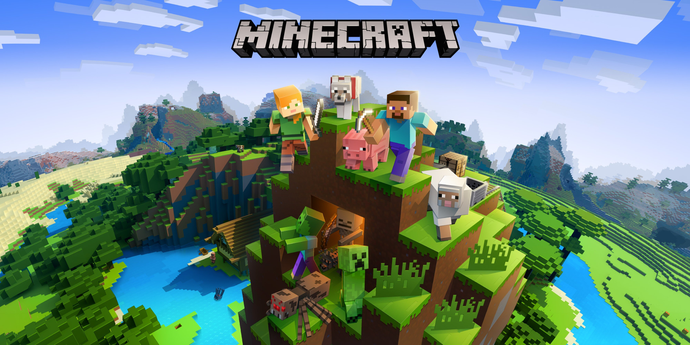

Описание
В Minecraft один из самых Больших игровых миров в жанре, который может генерироваться почти до бесконечности.
Мир данной кубической игры наполнен приключениями и множества сюжетов. Вы можете как пойти на край и убить эндер дракона, так и развивать сельское дело, строя свою деревню защищая ее от разбойников
Minecraft Плотно вошел в мир гейминга, его спидранят ставя немыслеммые рекорды или же строят города в масштабе 1 к 1, некоторые умудряются строить макеты за деньги, тем самым зарабатывая себе на жизнь
Биомы
В Minecraft не так много устаявшихся локаций, но каждая индивидуальна по своему, Саванна, поля, горы и холмы, пустыня и арктика
В них встречаются разные животные и мобы, а так-же деревни с жителями, в которых вы можете остановится во время своих приключений
Мобы
В игре огромное количество разнообразных мобов. Всего в Майнкрафте 27 мобов, которых можно встретить в обычном мире и 7 в Аде.
Некоторые мобы могут быть для вас безобидными днем, но опасными ночью, а некоторые не тронут вас, пока вы первый на них не нападете.
Предметы
В игре более 1000 предметов, с которыми вы можете взаимодейсвовать.
Строительные предметы
Это блоки которые как правило легко добываются и игрок может делать из них постройки такие как - дома, загоны, ландшафт и многое другое
Инструменты
Они помогут вам в добыче блоках - кирка и топор, Мотыга поможет вам вскопать землю для высадки семян, лопата поможет выровнить землю для вашего фундамента, а меч спасет от мобов и поможет добыть еду
Дракон
Основная линяя сюжета игры, вы должны развиваться, добывать ресурсы, А потом отправится в ад для добычи глаза эндера и нефритовых палочек которые помогут вам в поисках гробницы и отыскать там портал в Эндер мир, где вас ждет испытание - Дракон Вам предстоит сломать все его башни, с помощью которых он питает себя и в конечном итоге победить его!
Сокровище.
В своих странствиях вы можете отыскать затонувший корабль, где будет находиться карта, которая приведет вас к подводному замку
Там вы встретите стражей и короля, которые будут вас пытаться убить, вы так же должны их одолеть для получения тризубца, который поможет вам передвигатся под водой, словно вы летаете
Хардкор
Режим игры где вы не имеете права на ошибку, в хардкоре нельзя умирать, так как игра сразу закончится, Данный режим пользуется популярностью у игроков, которые провели в игре не один десяток тысяч часов
Реализм
Нельзя сказать что игра реалестична графикой, ведь в ней все квадратное, но рецепты крафта, поведение NPC и симуляция природы дает понять, что игра проста лишь на первый взгляд
Если скачать шейдеры, то игра станет очень сложным и в то же время красивым симулятором для выживания.

Музыка
В игре довольно странный набор музыкального сопровождения, но в тоже время идеален. Музыка настораживает и дает покой, использованны произведения культовых писателей